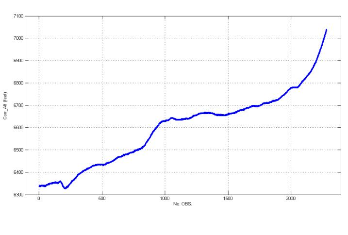
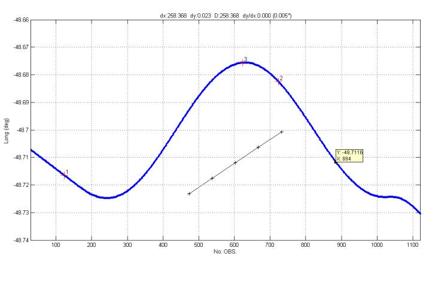
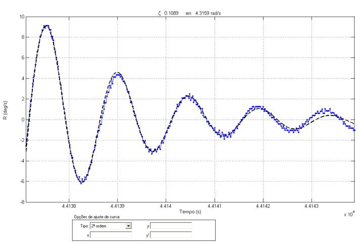
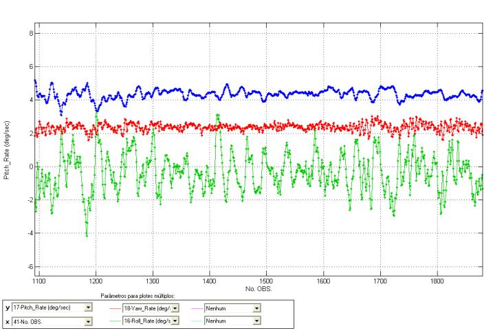
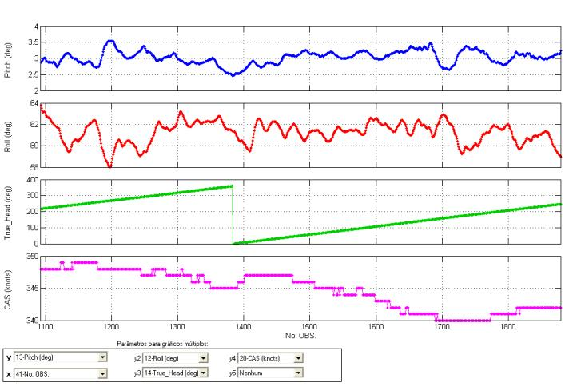
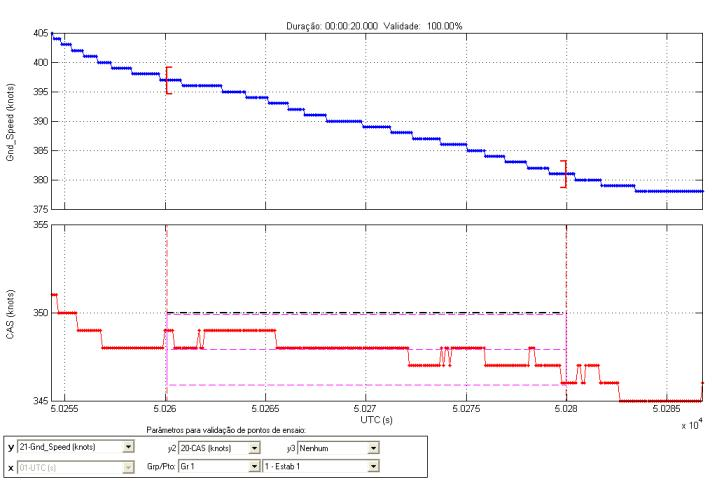

| Menu
Editar |
|
Copiar
Essa operação
copia a imagem apresentada na janela principal
para a Área de Transferência do Windows.
Clique no menu “Editar ►
Copiar” ou no botão  na
barra de ferramentas.
na
barra de ferramentas.
O R_DAT
ocultará todos os objetos gráficos não relevantes,
como botões de controle, caixa de mensagens, barra de ferramentas, etc.
Apenas os
objetos listados abaixo serão copiados:
- Gráficos (com todo
o conteúdo);
- Nomes dos eixos;
- Título do gráfico;
- Caixa de diálogo
(sem botões).
Após a cópia, é
possível colar a imagem em um editor de
imagens ou diretamente em um documento.
Alguns exemplos
de cópias são apresentados abaixo:
Gráfico simples:

Gráfico simples
com objetos auxiliares:

Ajuste de curva:

Plotes múltiplos:

Gráficos
múltiplos:

Visualização de
ponto de ensaio:

|
Nota: A cópia será
sempre com fundo branco, independente da definição
de cor do R_DAT. |
| |
Menu
Editar |
Copiar no
modelo |
|